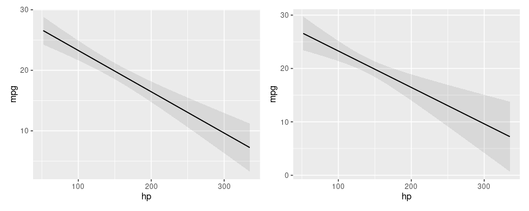
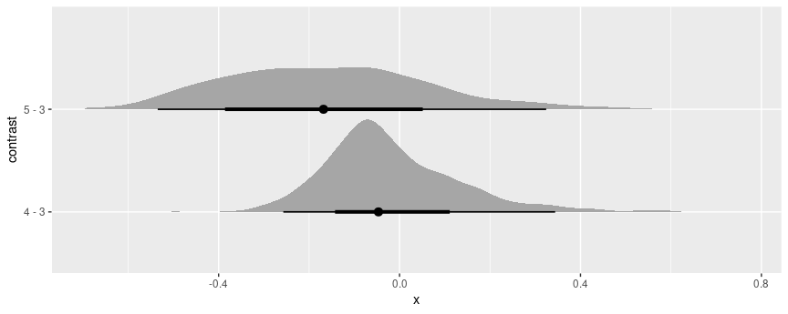
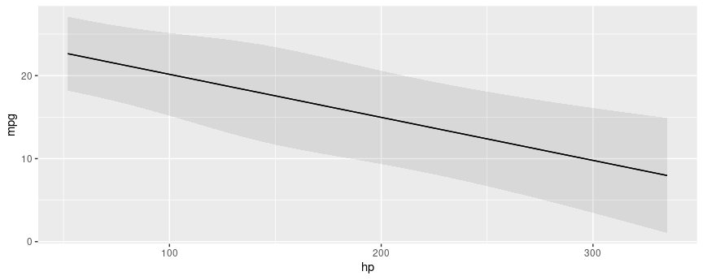

Standard Errors
Delta Method
All the standard errors generated by the slopes(), comparisons(),
and hypotheses() functions of this package package are estimated using
the delta method. Mathematical treatments of this method can be found in
most statistics textbooks and on
Wikipedia. Roughly
speaking, the delta method allows us to approximate the distribution of
a smooth function of an asymptotically normal estimator.
Concretely, this allows us to generate standard errors around functions
of a model’s coefficient estimates. Predictions, contrasts, marginal
effects, and marginal means are functions of the coefficients, so we can
use the delta method to estimate standard errors around all of those
quantities. Since there are a lot of mathematical treatments available
elsewhere, this vignette focuses on the “implementation” in
marginaleffects.
Consider the case of the marginal_means() function. When a user calls
this function, they obtain a vector of marginal means. To estimate
standard errors around this vector:
- Take the numerical derivative of the marginal means vector with
respect to the first coefficient in the model:
- Compute marginal means with the original model: f(β)
- Increment the first (and only the first) coefficient held inside the model object by a small amount, and compute marginal means again: f(β+ε)
- Calculate: $\frac{f(\beta+\varepsilon) - f(\beta)}{\varepsilon}$
- Repeat step 1 for every coefficient in the model to construct a J matrix.
- Extract the variance-covariance matrix of the coefficient estimates: V
- Standard errors are the square root of the diagonal of JVJ′
Scroll down this page to the Numerical Derivatives section to see a detailed explanation, along with code for manual computation.
Standard errors and intervals for slopes() and comparisons()
All standard errors for the slopes() and comparisons() functions are
computed using the delta method, as described above. The confidence
intervals are calculated as estimate ± qnorm((1 - conf_level) / 2)
standard errors (e.g., for 95% confidence intervals, estimate ± 1.96
standard errors) and assume that the (transformed) estimates are
normally distributed.
Standard errors and intervals for marginal_means() and predictions()
The marginal_means() and predictions() function can compute the
confidence intervals in two ways. If the following conditions hold:
- The user sets:
type = "response" - The model class is
glm - The
transformargument isNULL
then marginal_means() and predictions() will first compute estimates
on the link scale, and then back transform them using the inverse link
function supplied by insight::link_inverse(model) function.
In all other cases, standard errors are computed using the delta method as described above.
Robust standard errors
All the functions in the marginaleffects package can compute robust
standard errors on the fly for any model type supported by the
sandwich package. The vcov
argument supports string shortcuts like "HC3", a one-sided formula to
request clustered standard errors, variance-covariance matrices, or
functions which return such matrices. Here are a few examples.
Adjusted predictions with classical or heteroskedasticity-robust standard errors:
library(marginaleffects)
library(patchwork)
mod <- lm(mpg ~ hp, data = mtcars)
p <- predictions(mod)
head(p, 2)
#>
#> Estimate Std. Error z Pr(>|z|) S 2.5 % 97.5 %
#> 22.6 0.777 29.1 <0.001 614.7 21.1 24.1
#> 22.6 0.777 29.1 <0.001 614.7 21.1 24.1
#>
#> Columns: rowid, estimate, std.error, statistic, p.value, s.value, conf.low, conf.high, mpg, hp
#> Type: response
p <- predictions(mod, vcov = "HC3")
head(p, 2)
#>
#> Estimate Std. Error z Pr(>|z|) S 2.5 % 97.5 %
#> 22.6 0.863 26.2 <0.001 499.5 20.9 24.3
#> 22.6 0.863 26.2 <0.001 499.5 20.9 24.3
#>
#> Columns: rowid, estimate, std.error, statistic, p.value, s.value, conf.low, conf.high, mpg, hp
#> Type: response
Marginal effects with cluster-robust standard errors:
avg_slopes(mod, vcov = ~cyl)
#>
#> Term Estimate Std. Error z Pr(>|z|) S 2.5 % 97.5 %
#> hp -0.0682 0.0187 -3.65 <0.001 11.9 -0.105 -0.0316
#>
#> Columns: term, estimate, std.error, statistic, p.value, s.value, conf.low, conf.high
#> Type: response
Comparing adjusted predictions with classical and robust standard errors:
p1 <- plot_predictions(mod, condition = "hp")
p2 <- plot_predictions(mod, condition = "hp", vcov = "HC3")
p1 + p2

Simulation-based inference
marginaleffects offers an experimental inferences function to
conduct simulation-based inference following the strategy proposed by
Krinsky & Robb (1986):
- Draw
itersets of simulated coefficients from a multivariate normal distribution with mean equal to the original model’s estimated coefficients and variance equal to the model’s variance-covariance matrix (classical, “HC3”, or other). - Use the
itersets of coefficients to computeitersets of estimands: predictions, comparisons, or slopes. - Take quantiles of the resulting distribution of estimands to obtain a confidence interval and the standard deviation of simulated estimates to estimate the standard error.
Here are a few examples:
library(marginaleffects)
library(ggplot2)
library(ggdist)
mod <- glm(vs ~ hp * wt + factor(gear), data = mtcars, family = binomial)
mod |> predictions() |> inferences(method = "simulation")
#>
#> Estimate Std. Error 2.5 % 97.5 %
#> 7.84e-01 0.198 2.49e-01 0.973
#> 7.84e-01 0.165 3.46e-01 0.962
#> 8.98e-01 0.145 4.35e-01 0.988
#> 8.74e-01 0.230 1.73e-01 0.996
#> 1.31e-02 0.188 6.46e-05 0.712
#> --- 22 rows omitted. See ?avg_predictions and ?print.marginaleffects ---
#> 3.83e-01 0.300 1.33e-02 0.954
#> 1.21e-06 0.140 2.50e-12 0.589
#> 6.89e-03 0.157 2.34e-05 0.656
#> 8.07e-11 0.181 2.22e-16 0.952
#> 7.95e-01 0.168 3.24e-01 0.967
#> Columns: rowid, estimate, std.error, conf.low, conf.high, vs, hp, wt, gear
#> Type: response
mod |> avg_slopes(vcov = ~gear) |> inferences(method = "simulation")
#>
#> Term Contrast Estimate Std. Error 2.5 % 97.5 %
#> gear 4 - 3 -3.92e-02 0.05481 -0.0895 0.13492
#> gear 5 - 3 -1.93e-01 0.27082 -0.4862 0.33372
#> hp dY/dX -5.02e-03 0.00429 -0.0116 0.00327
#> wt dY/dX -3.98e-05 0.30375 -0.5042 0.71297
#>
#> Columns: term, contrast, estimate, std.error, conf.low, conf.high
#> Type: response
Since simulation based inference generates iter estimates of the
quantities of interest, we can treat them similarly to draws from the
posterior distribution in bayesian models. For example, we can extract
draws using the posterior_draws() function, and plot their
distributions using packages likeggplot2 and ggdist:
mod |>
avg_comparisons(variables = "gear") |>
inferences(method = "simulation") |>
posterior_draws("rvar") |>
ggplot(aes(y = contrast, xdist = rvar)) +
stat_slabinterval()

Bootstrap
It is easy to use the bootstrap as an alternative strategy to compute
standard errors and confidence intervals. Several R packages can help
us achieve this, including the long-established boot package:
library(boot)
set.seed(123)
bootfun <- function(data, indices, ...) {
d <- data[indices, ]
mod <- lm(mpg ~ am + hp + factor(cyl), data = d)
cmp <- comparisons(mod, newdata = d, vcov = FALSE, variables = "am")
tidy(cmp)$estimate
}
b <- boot(data = mtcars, statistic = bootfun, R = 1000)
b
#>
#> ORDINARY NONPARAMETRIC BOOTSTRAP
#>
#>
#> Call:
#> boot(data = mtcars, statistic = bootfun, R = 1000)
#>
#>
#> Bootstrap Statistics :
#> original bias std. error
#> t1* 4.157856 0.01543426 1.003461
boot.ci(b, type = "perc")
#> BOOTSTRAP CONFIDENCE INTERVAL CALCULATIONS
#> Based on 1000 bootstrap replicates
#>
#> CALL :
#> boot.ci(boot.out = b, type = "perc")
#>
#> Intervals :
#> Level Percentile
#> 95% ( 2.240, 6.277 )
#> Calculations and Intervals on Original Scale
Note that, in the code above, we set vcov=FALSE to avoid computation
of delta method standard errors and speed things up.
Compare to the delta method standard errors:
mod <- lm(mpg ~ am + hp + factor(cyl), data = mtcars)
avg_comparisons(mod, variables = "am")
#>
#> Term Contrast Estimate Std. Error z Pr(>|z|) S 2.5 % 97.5 %
#> am 1 - 0 4.16 1.26 3.31 <0.001 10.1 1.7 6.62
#>
#> Columns: term, contrast, estimate, std.error, statistic, p.value, s.value, conf.low, conf.high
#> Type: response
Mixed effects models: Satterthwaite and Kenward-Roger corrections
For linear mixed effects models we can apply the Satterthwaite and Kenward-Roger corrections in the same way as above:
library(marginaleffects)
library(patchwork)
library(lme4)
dat <- mtcars
dat$cyl <- factor(dat$cyl)
dat$am <- as.logical(dat$am)
mod <- lmer(mpg ~ hp + am + (1 | cyl), data = dat)
Marginal effects at the mean with classical standard errors and z-statistic:
slopes(mod, newdata = "mean")
#>
#> Term Contrast Estimate Std. Error z Pr(>|z|) S 2.5 % 97.5 %
#> am TRUE - FALSE 4.6661 1.1343 4.11 <0.001 14.6 2.4430 6.8892
#> hp dY/dX -0.0518 0.0115 -4.52 <0.001 17.3 -0.0743 -0.0294
#>
#> Columns: rowid, term, contrast, estimate, std.error, statistic, p.value, s.value, conf.low, conf.high, predicted_lo, predicted_hi, predicted, mpg, hp, am, cyl
#> Type: response
Marginal effects at the mean with Kenward-Roger adjusted variance-covariance and degrees of freedom:
slopes(mod,
newdata = "mean",
vcov = "kenward-roger")
#>
#> Term Contrast Estimate Std. Error t Pr(>|t|) S 2.5 % 97.5 % Df
#> am TRUE - FALSE 4.6661 1.2824 3.64 0.0874 3.5 -1.980 11.3121 1.68
#> hp dY/dX -0.0518 0.0152 -3.41 0.0964 3.4 -0.131 0.0269 1.68
#>
#> Columns: rowid, term, contrast, estimate, std.error, statistic, p.value, s.value, conf.low, conf.high, predicted_lo, predicted_hi, predicted, mpg, hp, am, cyl, df
#> Type: response
We can use the same option in any of the package’s core functions, including:

Numerical derivatives: Sensitivity to step size
dat <- read.csv("https://vincentarelbundock.github.io/Rdatasets/csv/palmerpenguins/penguins.csv")
dat$large_penguin <- ifelse(dat$body_mass_g > median(dat$body_mass_g, na.rm = TRUE), 1, 0)
mod <- glm(large_penguin ~ bill_length_mm * flipper_length_mm + species, data = dat, family = binomial)
marginaleffects uses numerical derivatives in two contexts:
- Estimate the partial derivatives reported by
slopes()function.- Centered finite difference
- $\frac{f(x + \varepsilon_1 / 2) - f(x - \varepsilon_1 / 2)}{\varepsilon_1}$,
where we take the derivative with respect to a predictor of
interest, and f is the
predict()function.
- Estimate standard errors using the delta method.
- Forward finite difference
- $\frac{g(\hat{\beta}) - g(\hat{\beta} + \varepsilon_2)}{\varepsilon_2}$,
where we take the derivative with respect to a model’s
coefficients, and g is a
marginaleffectsfunction which returns some quantity of interest (e.g., slope, marginal means, predictions, etc.)
Note that the step sizes used in those two contexts can differ. If the variables and coefficients have very different scales, it may make sense to use different values for ε1 and ε2.
By default, ε1 is set to 1e-4 times the range of the
variable with respect to which we are taking the derivative. By default,
ε2 is set to the maximum value of 1e-8, or 1e-4 times
the smallest absolute coefficient estimate. (These choices are
arbitrary, but I have found that in practice, smaller values can produce
unstable results.)
ε1 can be controlled by the eps argument of the
slopes() function. ε2 can be controlled by setting a
global option which tells marginaleffects to compute the jacobian
using the numDeriv package instead of its own internal functions. This
allows more control over the step size, and also gives access to other
differentiation methods, such as Richardson’s. To use numDeriv, we
define a list of arguments which will be pushed forward to
numDeriv::jacobian:
avg_slopes(mod, variables = "bill_length_mm")
#>
#> Term Estimate Std. Error z Pr(>|z|) S 2.5 % 97.5 %
#> bill_length_mm 0.0279 0.00595 4.69 <0.001 18.4 0.0162 0.0395
#>
#> Columns: term, estimate, std.error, statistic, p.value, s.value, conf.low, conf.high
#> Type: response
options(marginaleffects_numDeriv = list(method = "Richardson"))
avg_slopes(mod, variables = "bill_length_mm")
#>
#> Term Estimate Std. Error z Pr(>|z|) S 2.5 % 97.5 %
#> bill_length_mm 0.0279 0.00595 4.69 <0.001 18.4 0.0162 0.0395
#>
#> Columns: term, estimate, std.error, statistic, p.value, s.value, conf.low, conf.high
#> Type: response
options(marginaleffects_numDeriv = list(method = "simple", method.args = list(eps = 1e-3)))
avg_slopes(mod, variables = "bill_length_mm")
#>
#> Term Estimate Std. Error z Pr(>|z|) S 2.5 % 97.5 %
#> bill_length_mm 0.0279 0.568 0.049 0.961 0.1 -1.09 1.14
#>
#> Columns: term, estimate, std.error, statistic, p.value, s.value, conf.low, conf.high
#> Type: response
options(marginaleffects_numDeriv = list(method = "simple", method.args = list(eps = 1e-5)))
avg_slopes(mod, variables = "bill_length_mm")
#>
#> Term Estimate Std. Error z Pr(>|z|) S 2.5 % 97.5 %
#> bill_length_mm 0.0279 0.00601 4.64 <0.001 18.1 0.0161 0.0396
#>
#> Columns: term, estimate, std.error, statistic, p.value, s.value, conf.low, conf.high
#> Type: response
options(marginaleffects_numDeriv = list(method = "simple", method.args = list(eps = 1e-7)))
avg_slopes(mod, variables = "bill_length_mm")
#>
#> Term Estimate Std. Error z Pr(>|z|) S 2.5 % 97.5 %
#> bill_length_mm 0.0279 0.00595 4.68 <0.001 18.4 0.0162 0.0395
#>
#> Columns: term, estimate, std.error, statistic, p.value, s.value, conf.low, conf.high
#> Type: response
Notice that the standard errors can vary considerably when using different step sizes. It is good practice for analysts to consider the sensitivity of their results to this setting.
Now, we illustrate the full process of standard error computation, using
raw R code. First, we choose two step sizes:
eps1 <- 1e-5 # slope
eps2 <- 1e-7 # delta method
s <- slopes(mod, newdata = head(dat, 3), variables = "bill_length_mm", eps = eps1)
print(s[, 1:5], digits = 6)
#>
#> Term Estimate Std. Error z
#> bill_length_mm 0.0179765 0.00872988 2.05919
#> bill_length_mm 0.0359630 0.01254767 2.86611
#> bill_length_mm 0.0849071 0.02128459 3.98913
#>
#> Columns: rowid, term, estimate, std.error, statistic
We can get the same estimates manually with these steps:
linkinv <- mod$family$linkinv
## increment the variable of interest by h
dat_hi <- transform(dat, bill_length_mm = bill_length_mm + eps1)
## model matrices: first 3 rows
mm_lo <- insight::get_modelmatrix(mod, data = dat)[1:3,]
mm_hi <- insight::get_modelmatrix(mod, data = dat_hi)[1:3,]
## predictions
p_lo <- linkinv(mm_lo %*% coef(mod))
p_hi <- linkinv(mm_hi %*% coef(mod))
## slopes
(p_hi - p_lo) / eps1
#> [,1]
#> 1 0.01797653
#> 2 0.03596304
#> 3 0.08490712
To get standard errors, we build a jacobian matrix where each column holds derivatives of the vector valued slope function, with respect to each of the coefficients. Using the same example:
b_lo <- b_hi <- coef(mod)
b_hi[1] <- b_hi[1] + eps2
dydx_lo <- (linkinv(mm_hi %*% b_lo) - linkinv(mm_lo %*% b_lo)) / eps1
dydx_hi <- (linkinv(mm_hi %*% b_hi) - linkinv(mm_lo %*% b_hi)) / eps1
(dydx_hi - dydx_lo) / eps2
#> [,1]
#> 1 0.01600109
#> 2 0.02771394
#> 3 0.02275957
This gives us the first column of J, which we can recover in full from
the marginaleffects object attribute:
J <- attr(s, "jacobian")
J
#> (Intercept) bill_length_mm flipper_length_mm speciesChinstrap speciesGentoo bill_length_mm:flipper_length_mm
#> [1,] 0.01600803 0.6777495 2.897238 0 0 122.6914
#> [2,] 0.02770006 1.1957935 5.153072 0 0 222.4989
#> [3,] 0.02275957 1.1491919 4.440004 0 0 224.0833
To build the full matrix, we would simply iterate through the coefficients, incrementing them one after the other. Finally, we get standard errors via:
Which corresponds to our original standard errors:
print(s[, 1:5], digits = 7)
#>
#> Term Estimate Std. Error z
#> bill_length_mm 0.01797650 0.008729884 2.059192
#> bill_length_mm 0.03596299 0.012547666 2.866110
#> bill_length_mm 0.08490708 0.021284589 3.989134
#>
#> Columns: rowid, term, estimate, std.error, statistic
Reverting to default settings:
Note that our default results for this model are very similar – but not
exactly identical – to those generated by the margins. As should be
expected, the results in margins are also very sensitive to the value
of eps for this model:
library(margins)
margins(mod, variables = "bill_length_mm", data = head(dat, 3), unit_ses = TRUE)$SE_dydx_bill_length_mm
#> [1] 0.008727977 0.012567079 0.021293275
margins(mod, variables = "bill_length_mm", data = head(dat, 3), eps = 1e-4, unit_ses = TRUE)$SE_dydx_bill_length_mm
#> [1] 0.2269512 0.2255849 0.6636208
margins(mod, variables = "bill_length_mm", data = head(dat, 3), eps = 1e-5, unit_ses = TRUE)$SE_dydx_bill_length_mm
#> [1] 0.02317078 0.02928267 0.05480282
Bayesian estimates and credible intervals
See the brms vignette for a discussion of bayesian
estimates and credible intervals.